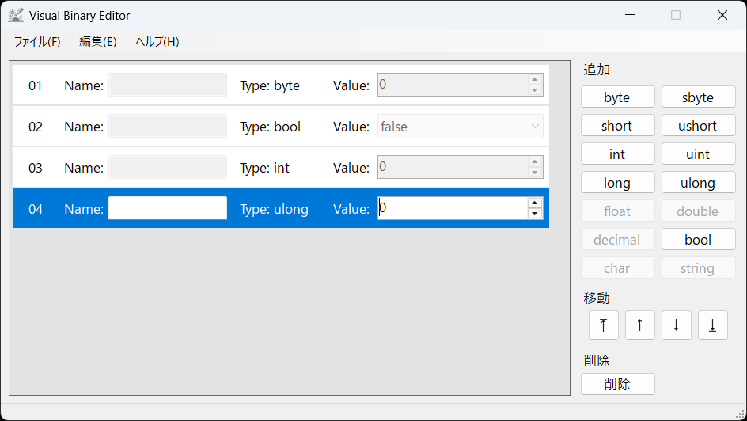
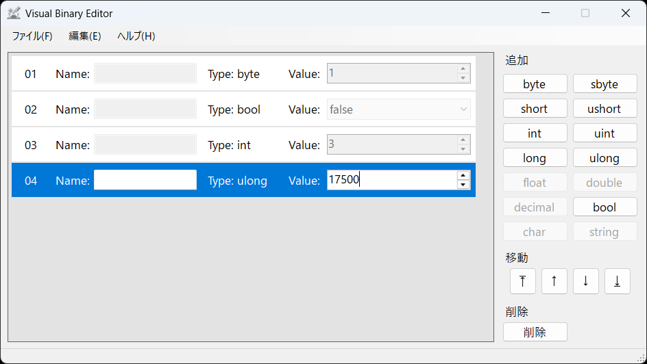
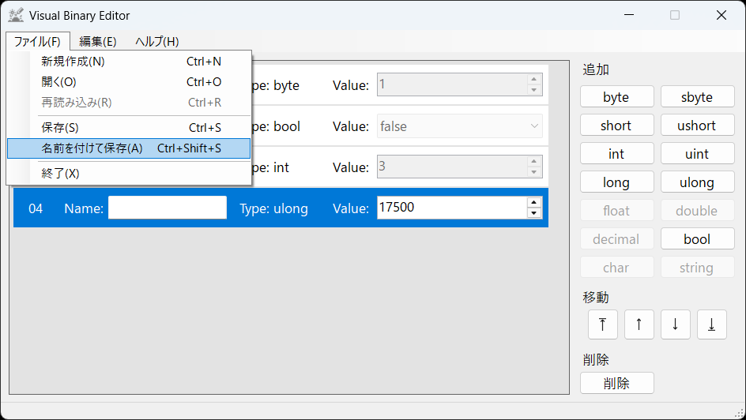

Visual Binary Editor
Visual Binary Editor
チュートリアル: バイナリファイルの作成
まず、以下のようなプログラムを実行して生成できるバイナリファイルを作成します。
byte saveFileVersion = 1;
bool isCompleted = false;
int stageID = 3;
ulong totalScore = 17500;
// ...
using (BinaryWriter writer = new BinaryWriter(fileStream))
{
writer.Write(saveFileVersion);
writer.Write(isCompleted);
writer.Write(stageID);
writer.Write(totalScore);
}
Visual Binary Editorを起動し、右側の操作盤からbyte, bool, int, ulongの順にボタンを押します。
💡ヒント
バイナリエントリの追加は、選択されているバイナリエントリ(青色のバイナリエントリ)の1つ下に作成されます。
💡ヒント
追加の順番を間違えた場合は、右側にある操作盤の移動で、選択中のバイナリエントリを移動できます。
また、間違った型のバイナリエントリを追加した場合は、そのバイナリエントリをクリックして選択し、操作盤の削除を押すと消せます。
以下のようになれば問題ありません。

✖ 注意
バイナリオーダーは全く同じでないと、想定しているものと違うファイルが生成されます。 バイナリエントリの数と各バイナリエントリの型が正しいか確認してください。
各バイナリエントリに値を入力します。
バイナリエントリをクリックして選択すると、青色になり、Valueに値を入力できるようになります。
byteに1,
boolにfalse,
intに3,
ulongに17500を指定します。

値の入力ができたら、メニューバーのファイル(F)にある名前を付けて保存(A)を選択し、任意の場所に保存します。
とりあえず、ここではtutorial.binと名前を付けて保存しましょう。

このように、バイナリファイルの生成は、バイナリオーダーを作成 → バイナリエントリに値を入力 → ファイルを保存 の流れで行うことができます。